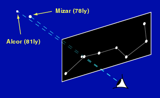
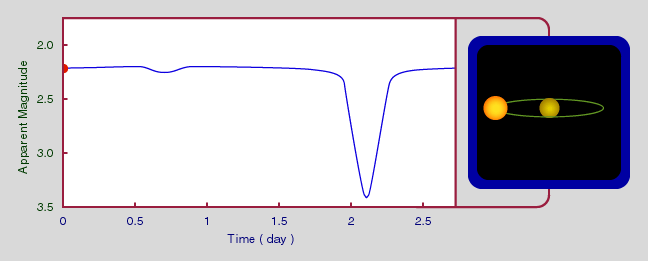
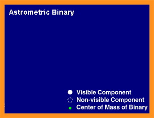
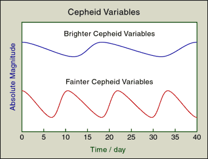
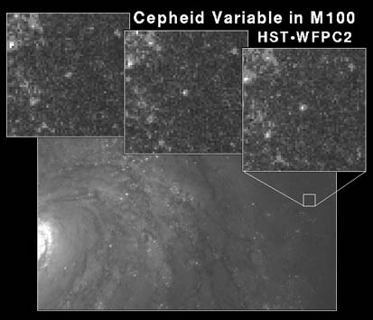
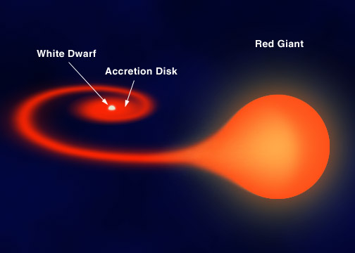
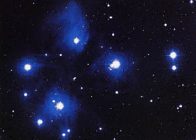
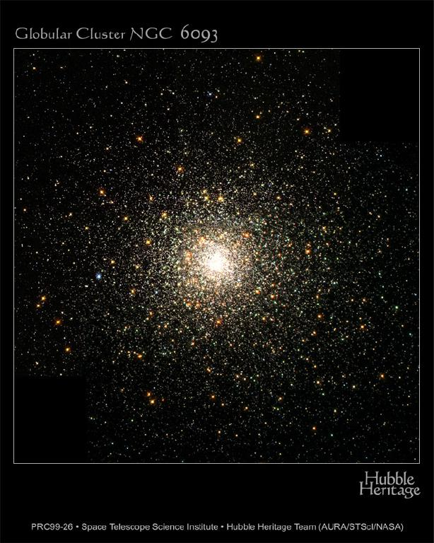
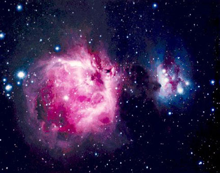

There are basically five types of binary stars, according to how the binary systems are discovered. Thus, some systems could belong to more than one type.




The most famous class is the Cepheid variables with the light curves similar to the ones above. Their periods, in the range of a few days to a few months, have a definite relation with the luminosities. The longer the period, the brighter the star is. Thus, by measuring the period of a Cepheid variable, we know its absolute magnitude, hence, we can tell how far it is away by comparing with its apparent magnitude.
Well, you may ask: How can we determine the luminosity-period relation? We have to use some other methods to measure the luminosity or equivalently the absolute magnitude of the Cepheid variable. Since we can readily measure the apparent magnitude of a Cepheid variable, to measure the luminosity means measuring the distance. We use some distance measurement methods, for example, parallax, to determine the relation. This usually means that we find out the relation using stars near us, then apply the relation to greater distances. (See, for example, Henrietta Swan Leavitt.)
In general, we use accurately determined distance indicators for small distance to calibrate distance indicators for greater distances. We have to use quite a few distance indicators because there is no single one that can measure all the distances. This is the cosmic distance ladder. Cepheid variable is the foundation of this ladder.
 |
| Courtesy STScI. |

There are two types of clusters.
 |
| Courtesy NASA. |
 |
| Courtesy STScI. |
 |
| Courtesy NASA. |
Nebula by itself cannot produce any energy. However, some may scatter light from the other stars and so be seen. Also, in the cases where there are some bright stars nearby, the gases may be ionized and emit red light. Nebulae are the birthplaces of stars. (Don't confuse nebulae with planetary nebulae, which we will discuss in Chapter 15.)